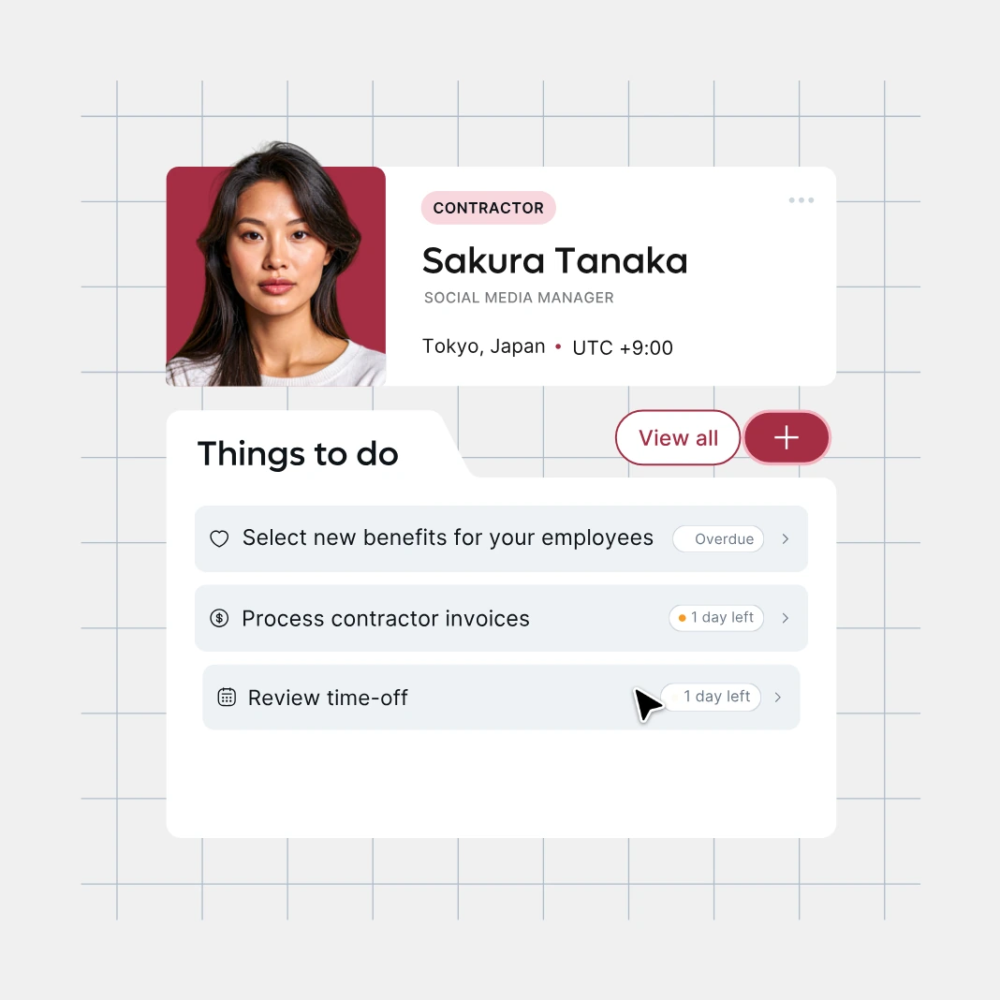
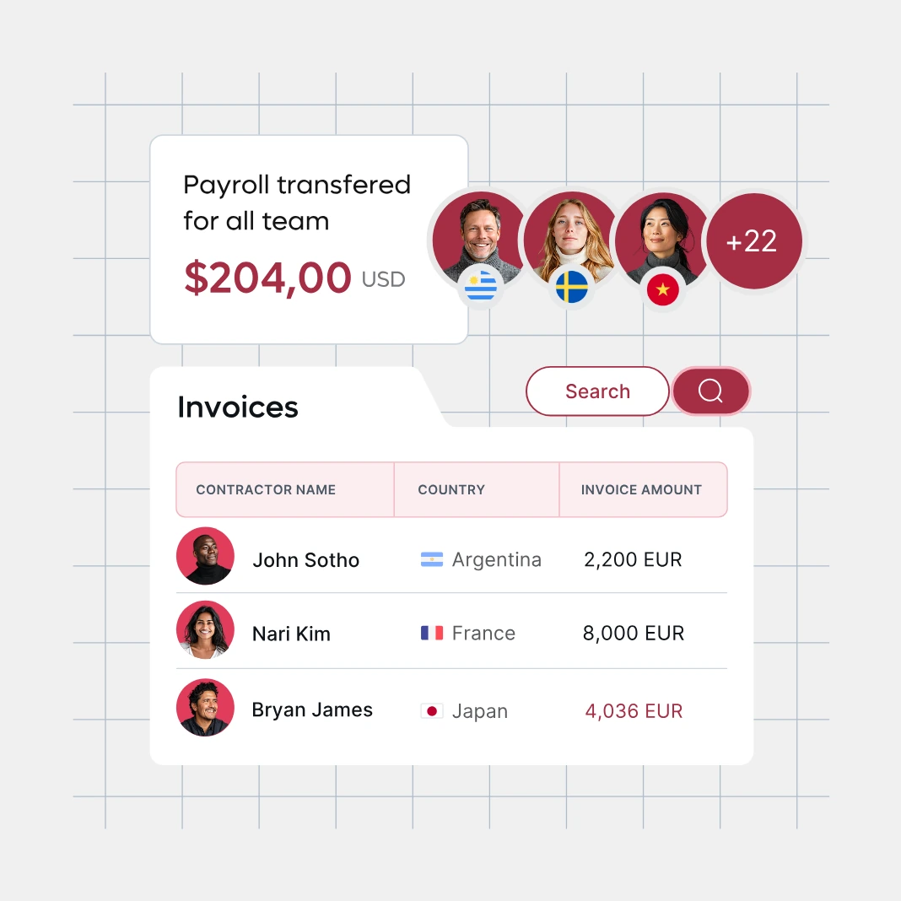
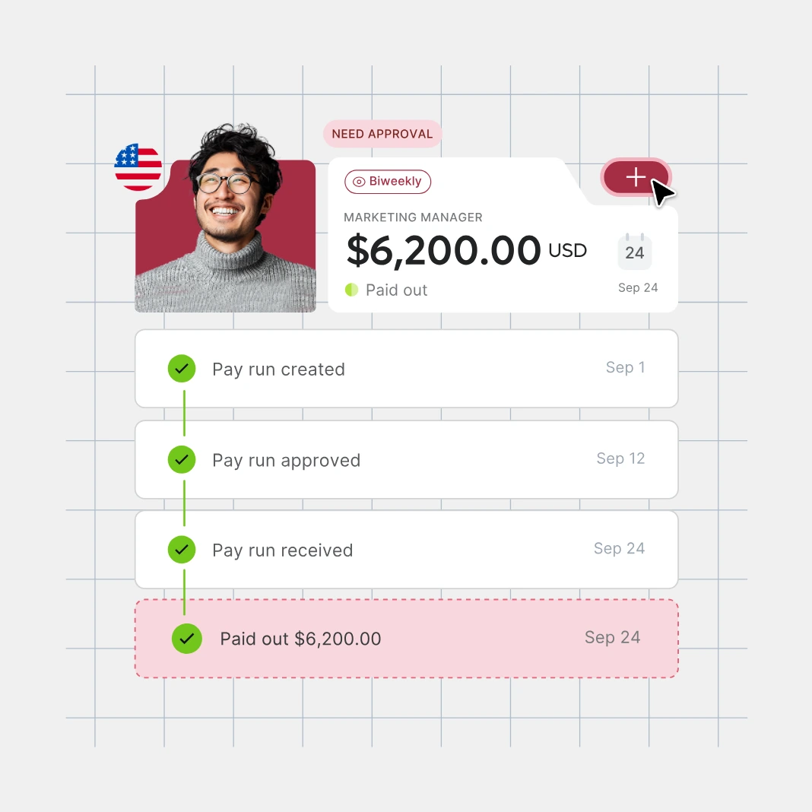

COST ANALYTICS
Fully-loaded cost, live
Salary, benefits, employer taxes, and contractor spend by country, entity, and team — in one currency, updated as each payroll runs. No exports.
NEW · WORKFORCE INTELLIGENCE
Workforce Intelligence turns the employment data Remote already runs — payroll, headcount, cost, and compliance across every country — into one current, decision-ready view for your People and Finance teams.


THE VISIBILITY GAP
When you employ people across dozens of countries, the numbers that matter — fully-loaded cost per employee, headcount by entity, compliance status — live in different tools, currencies, and time zones. By the time Finance reconciles them they are already out of date, and People teams answer board questions from stale exports.
ONE VIEW OF RECORD
Salary, benefits, employer taxes, and contractor spend, rolled up by country, entity, and team in your reporting currency — refreshed as each payroll runs.
A live map of who you employ, where, and how they are engaged — EOR, contractor, or PEO — and how your org is changing over time.
Where every worker stands on contracts, classification, and local requirements, surfaced before it becomes a risk.
Compare compensation against real market ranges and model the cost of your next hire in any country before you commit.
WHAT'S INSIDE
COST ANALYTICS
Salary, benefits, employer taxes, and contractor spend by country, entity, and team — in one currency, updated as each payroll runs. No exports.

COMPLIANCE
Classification, contract, and local-requirement status for every worker, drawn from the owned-entity compliance data Remote already maintains.

PLANNING
Benchmark pay against real market ranges and estimate the true cost of hiring in a new country before you open the role.
HOW IT WORKS

STEP 1
If you run employment through Remote, Workforce Intelligence is populated from day one. No imports, no data warehouse, no setup project.

STEP 2
Add contractors and directly-employed staff to the same view with lightweight connectors and secure uploads.

STEP 3
Finance sees cost, People sees headcount, leadership sees the summary — role-based, from a single source of truth.
BEFORE AND AFTER
| Cost reporting | Spreadsheets reconciled monthly, per country → one live rollup, every currency |
|---|---|
| Compliance checks | Periodic manual audits → continuous status, flagged early |
| Headcount data | Exports from several systems → a single current org view |
| Planning a hire | Guesswork and email threads → modeled cost before you commit |
Companies already run their global operations on Remote's owned infrastructure.
If we had to manage and coordinate everything in-house, it would cost us well over $500,000 more each year. Remote not only eliminates that financial strain but also takes the operational burden off our plate, allowing us to focus on growing our business with confidence and efficiency.
We run monthly, semi-monthly and hourly payroll in multiple different currencies around the world and our Finance Manager has full visibility in a single platform. With Remote, you can make it happen.
We see Remote as a leading and trusted partner in this space. The expert support they provide in local payroll, tax compliance, and HR operations has streamlined our processes and created more opportunities for growth and success on a global scale.
QUESTIONS
It is most complete when Remote runs your employment, because the data is already there. You can also bring in contractors and directly-employed staff through connectors and secure uploads.
From the employment records Remote already maintains as your Employer of Record, payroll, and contractor provider, plus any sources you connect. Nothing is estimated where a real record exists.
People and HR operations leaders who need current headcount and compliance status, and Finance leaders who need fully-loaded workforce cost — working from the same source of truth.
Workforce Intelligence runs on the same infrastructure as the rest of Remote, which is SOC 2 Type 2 compliant and ISO 27001 certified. Access is role-based.
Book a demo and we will show it with your regions and engagement types. If you already use Remote, we can walk through your live view.
REQUEST A DEMO
Tell us a little about your team and we will tailor the walkthrough to your countries, entities, and engagement mix.
Copyright © 2026. Remote Technology, Inc. All rights reserved.
Numbers on this page are based on internal data compiled from existing customer base and speed assumption is based on the fact that standard onboarding may take 30 days and Remote’s average onboarding time is 2.3 days.
![App Store]()
![Google Play]()